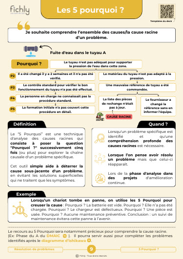
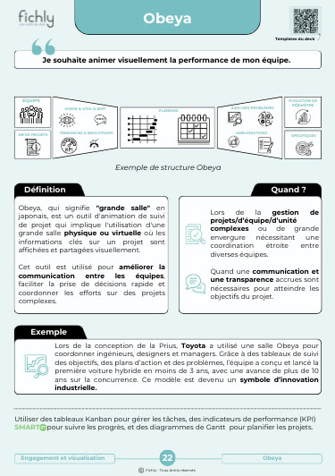
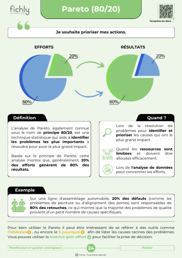
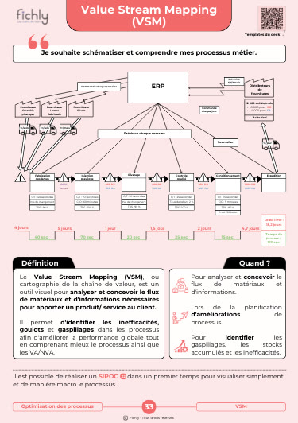
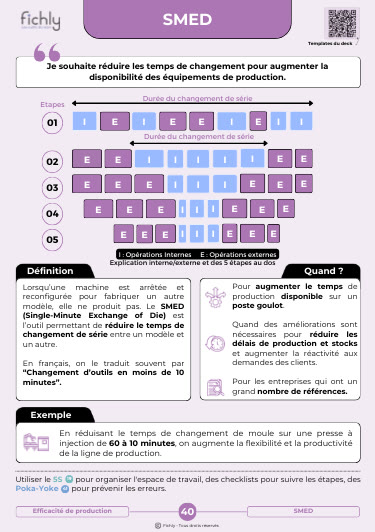
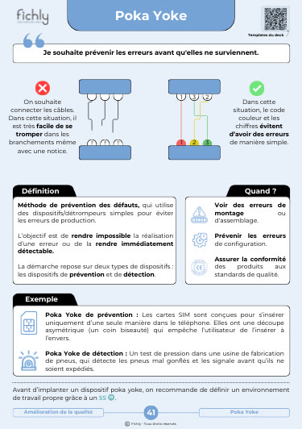
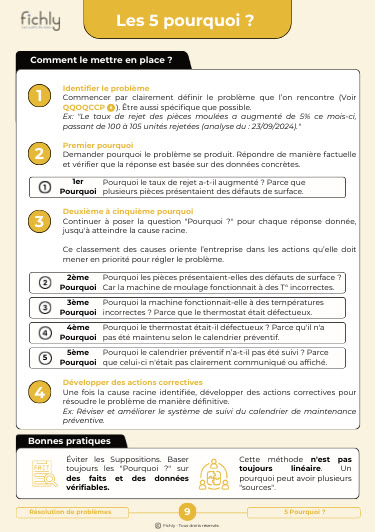

Excellentes fiches pédagogiques
Excellentes fiches pédagogiques ^^
Proposition V2 de /products/fiches-lean, dans la même famille visuelle que les articles V2. Les textes, le prix, les avis et les produits liés viennent de la boutique au 1er octobre 2026. Ce qui manque est surligné en orange : je ne l'ai pas inventé. Les pastilles numérotent les blocs, le plan en bas de page les détaille.







Carrousel-produit-4.jpgtexte alternatif à rédigerLean_YouKnow_Carrousel.pngtexte alternatif à rédigerCarrousel-produit-5.jpgtexte alternatif à rédigercustom.video_fiche_produit, lue sans le son en boucleLes outils en 15 secondes
vidéos sans le sonLes outils clés pour structurer, animer et améliorer. Un deck de 40 fiches 40 ou 42 : selon la version imprimée imprimées en France, à garder sur le terrain.
4,79/528 avis41,58 € HT pour les entreprises taux de TVA à confirmer, facture à votre nom : à confirmer
Livraison prix, reçu entre le date et le date · Droit légal de rétractation : 14 jours après réception
Choisissez un outil et retournez la fiche : le recto pour comprendre, le verso pour appliquer. Aperçu numérique des fichiers d'impression à doubler d'une photo de la fiche imprimée (bouton « Voir en photo »).
Sur chaque recto, un QR code ouvre les templates numériques du deck nombre de templates à confirmer : « +15 » en introduction, « +30 » en page bonus
Six familles, une couleur chacune, celle de la fiche imprimée. Le numéro est celui de la fiche dans le deck. Les outils fléchés ont un article complet sur notre blog, l'œil ouvre la fiche, recto verso.
Étudiant ou nouvel arrivant, vous découvrez le 5S, les 5 Pourquoi ou le SMED sans jargon inutile ni complexité superflue.
Vous connaissez déjà les outils. Le deck devient votre aide-mémoire avant un chantier, une revue ou une formation.
Manager ou formateur, vous posez la fiche sur la table et vous expliquez l'outil à votre équipe en cinq minutes.
Se former au Lean peut sembler intimidant. Les concepts sont denses, les outils nombreux, et les méthodes parfois complexes à appliquer concrètement. Pourtant, maîtriser ces notions est essentiel pour qui veut exceller dans l'industrie, améliorer ses compétences, ou accompagner une équipe vers l'excellence opérationnelle.
C'est en partant de ce constat que nous avons créé un deck de 40 fiches dédié aux outils du Lean management et manufacturing. Pensées pour être simples, pédagogiques et accessibles, ces fiches sont bien plus qu'un support de formation. Elles sont une véritable boîte à outils pour le terrain, la salle de formation ou même le bureau.
![Hugo Duc]()
« On n'a pas voulu impressionner. On a voulu transmettre. Chaque fiche traduit un concept parfois flou en une idée concrète, applicable, et surtout compréhensible. Ce deck, c'est comme avoir un formateur patient, posé, et ultra clair… toujours à portée de main. »
28 avis dont N achats vérifiés : à relever dans Judge.me
Excellentes fiches pédagogiques ^^
La meilleure synthèse pratico-pratique que je déploie au sein de mes équipes…
Ces fiches sont au top de leurs design à leurs format et pour le contenu c’est d’une clarté… Rien à dire… Bravo!!
Ce deck est un très bon outil pédagogique de second temps. Il permet d'avoir un aide-mémoire de qualité, complet mais synthétique pour engager une démarche d'amélioration.
Voir les 28 avis montrer aussi des avis à 4 étoiles (6 sur 28) et la date d'achat de chaque avis
Les outils du Lean management et manufacturing, rangés en six familles : résolution de problèmes, engagement et visualisation, planification et gestion stratégique, optimisation des processus et des flux, efficacité de production, amélioration de la qualité. Un Guide du deck vous indique quelle fiche prendre selon ce que vous voulez faire. La liste complète, avec le numéro de chaque fiche, est plus haut sur cette page.
Au recto : le besoin (« Je souhaite… »), un schéma, la définition, quand l'utiliser et, selon l'outil, un exemple. Au verso : la mise en place étape par étape et, sur la plupart des fiches, les bonnes pratiques. Un QR code mène aux templates numériques du deck.
Aux managers qui veulent transmettre les outils à leur équipe, aux étudiants qui entrent dans l'industrie et aux professionnels qui veulent monter en compétence.
En France.
Dimensions, papier, boîte : à fournir par Hugo.
Délai et frais de livraison : à fournir par Hugo.
Oui. Le droit légal de rétractation vous laisse 14 jours après réception pour changer d'avis. Frais de retour à la charge du client ou de Fichly : à préciser.
Conditions de commande en volume et facture entreprise : à fournir par Hugo.
La certification Green Belt Lean Management (RS7114) : 6 jours pour mener un projet réel de bout en bout, avec la démarche DMAIC.
Tout le contenu existe déjà dans Shopify, sauf ce qui est marqué « à fournir ». La page se construit dans le thème copié, comme pour les articles, sans toucher au gabarit produit actuel.
| # | Bloc | Contenu et source | État actuel |
|---|---|---|---|
| 1 | Galerie | Dans la maquette : six fiches en éventail (aperçu numérique), puis le recto et le verso d'une fiche. En ligne : une vraie photo en premier (plan 1 de la liste), puis la fiche en main avec les cotes, le recto verso, « tout ce que vous recevez », la vidéo custom.video_fiche_produit. Le visuel « Lean, you know » descend dans « Pour qui, pour quoi ». | Vignettes Canva en 375 × 532 : exporter les fiches en haute définition |
| 1c | Bulles · les outils en 15 s | Métachamp produit fichly.stories (liste de métaobjets story_outil : nom, famille 1 à 6, vidéo MP4, affiche, vignette, texte de la vidéo, article lié). Rangée de vignettes sous la galerie ; le lecteur ne charge la vidéo qu'au tap. | Nouveau · 7 vidéos rendues sur 43 (42 outils + le deck) |
| 1d | Une fiche du deck, recto verso | Huit fiches à retourner (recto, verso), avec les rubriques du « Guide de lecture des cartes » du deck. Sélecteur « Je souhaite… » qui reprend le Guide du deck : besoin, outil, numéro de fiche, puis la fiche. Données : guide.json, à passer en métaobjets. | Nouveau |
| 2 | Bloc d'achat | Titre (sans le point final), custom.sous_titre, note reviews.rating et reviews.rating_count, prix lu dans la boutique, custom.avantage_1 à _3, quantité, devis équipe, réassurance. | Avantages et sous-titre déjà remplis |
| 2b | Pack sous le bouton | Premier produit de shopify--discovery--product_recommendation.complementary_products, à remplacer par le pack. Présenté comme une alternative au deck seul : « 109,90 € au lieu de 139,60 € achetés séparément (−21 %) ». | Ce champ pointe vers le guide VSM, pas vers le pack |
| 3 | Les fiches par famille | Le Guide du deck : 42 outils numérotés de 4 à 45, en six familles, avec leur couleur imprimée. Lien vers l'article quand l'outil en a un, œil pour ouvrir la vraie fiche. Remplace custom.les_outils_abordes. | La liste Shopify ne correspond plus au deck |
| 4 | Pour qui, pour quoi | Trois usages tirés de la description (apprendre, consolider, transmettre), puis custom.texte_seo replié après le premier paragraphe. | Texte SEO déjà rédigé |
| 5 | Le mot de l'expert | Métaobjet custom.expert (type experts) : titre, citation, photo, nom, poste. Anneau six couleurs autour de la photo, comme l'auteur des articles. | Rempli |
| 6 | Avis | Widget Judge.me restylé aux couleurs Fichly : note, répartition, avis les plus récents d'abord avec leur date complète, tri, puis « Voir les 28 avis ». Les avis sont repris mot pour mot. | 28 avis, 4,79/5 |
| 7 | Questions | Trois réponses tirées de la fiche, trois à rédiger. Nouveau métachamp fichly.faq pour qu'elles soient modifiables sans toucher au thème. | Aucune FAQ aujourd'hui |
| 8 | Produits liés | related_products : pack et guide VSM, avec la famille du guide rappelée. | Rempli |
| 9 | Formation Green Belt | Le bloc des articles V2, sans cadeau associé à la formation (un avantage lié à une inscription financée par le CPF est interdit). | Textes déjà validés pour les articles |
| 10 | Le deck dans nos articles | Trois articles publiés dont l'outil est dans le deck, choisis par tag. Quinze outils de la liste ont déjà leur article (dont QQOQCCP, Ishikawa, Obeya, Pareto, Takt Time, AMDEC et Gemba, publiés les 1er et 2 octobre). Management visuel et Kaizen suivent les 19 et 26 octobre. | Nouveau |
| 11 | Barre d'achat qui suit | Apparaît quand le bouton principal est passé au-dessus de l'écran (calcul au défilement). Titre court, prix, bouton. | Nouveau |
Chaque vidéo est dessinée par un petit programme, comme vos fiches LinkedIn animées : la fiche s'anime, dans la couleur de sa famille. Même gabarit pour tous les outils, donc une nouvelle vidéo coûte une scène à écrire, pas un tournage. Les sept vidéos de cette maquette sont réelles : ce sont les fichiers que l'on mettrait en ligne.
À mesurer dès la mise en ligne : ouverture d'une bulle, vidéo vue jusqu'au bout, clic sur « Ajouter au panier » dans le lecteur. On compare ensuite le taux d'ajout au panier de ceux qui ouvrent une story à celui des autres. Les hausses de conversion annoncées par les éditeurs d'applis de stories viennent de leur marketing : on ne s'y fie pas.
Les aperçus numériques montrent le contenu des fiches. Ils ne montrent ni la taille, ni la matière, ni l'étui. Pour cela il faut des photos et une courte vidéo de l'objet, faites au smartphone. Veille du 2 octobre 2026 (Baymard, Pip Decks, MethodKit, Kickstarter) ; le réseau de la session a bloqué une partie des pages, les constats reposent alors sur les extraits de recherche.
| # | Action | Où sur la page | Ce que Fichly produit | Impact / effort |
|---|---|---|---|---|
| 1 | Une vraie photo en 1re image de la galerie | Galerie du haut (cadre carré 1:1), vue 1 et vignette 1. « Lean, you know » descend dans la section « Pour qui, pour quoi ». | Plan 1 de la liste. Export JPG de 2048 × 2048 px au moins. Texte alternatif : « Étui du deck 40 outils du Lean ouvert, six fiches en éventail, une par famille de couleur ». | fort / faible |
| 2 | Une fiche en main, et les cotes écrites sur l'image | Galerie, vues 2 et 3, avant la vidéo. | Plans 2 et 3. Mesurer la fiche et l'étui au réglet, puis ajouter les cotes dans Canva. Prendre un peu de recul : un gros plan seul grossit l'objet. | fort / faible |
| 3 | Écrire le format, le papier, la finition et l'étui | Une ligne sous le prix. La réponse de la FAQ « Quel est le format des fiches ? ». Les textes alternatifs des images. | La fiche technique de l'imprimeur (devis ou facture). N'écrire que ce qui est prouvé. | fort / faible |
| 4 | La photo « tout ce que vous recevez » | Galerie, vue 5. Et en tête de la section « Ce que vous recevez · La vraie fiche, recto verso », au-dessus du lecteur qui retourne la fiche. | Plan 5 : vue du dessus à 90°, debout sur une chaise ou avec un trépied tête en bas. Exports 1:1 et 4:5. | fort / moyen |
| 5 | Une vidéo réelle de prise en main, dans la galerie et en tête des bulles | Galerie, vue 3 : le métachamp custom.video_fiche_produit existe déjà. Pas de lecture automatique en 1re position. Et une bulle « En vrai » en 1re place dans la rangée « Les outils en 15 secondes ». | Plan 9. Compression H.264 avec CRF 20 à 23 et +faststart. Une image d'aperçu nette. Le texte de la vidéo pour les lecteurs d'écran : le lecteur des bulles le prévoit déjà. | fort / moyen |
| 6 | Des stories qui s'ouvrent et se ferment sur la fiche imprimée | Rangée de bulles, sur les 7 stories existantes. C'est la clé fiche.recto de chaque fichier stories/<id>/scene.js. | Plan 7 : une photo par outil, vue du dessus, redressée et recadrée au ratio 375:532. Étiquette de fin (legende) : « Fiche n° 9 du deck, imprimée ». Relancer outils/rendu.js. | moyen / faible |
| 7 | Le recto, le verso et la matière en photo HD, et l'aperçu Canva nommé comme tel | Galerie, vues 4 et 8. Dans la section « La vraie fiche, recto verso », un bouton « Voir en photo » à côté de « Retourner la fiche ». Le badge « Vraies fiches » de la galerie seulement sur les photos. | Plans 4 et 6. Réexport Canva en HD de 6 fiches (une par famille), recto et verso. | moyen / faible |
| 8 | Une bulle « Fabrication » tirée des rushes de l'imprimeur | Rangée de bulles, en 2e place après « En vrai ». Une image fixe des rushes dans la galerie (vue 8), à côté du badge « Imprimé en France ». | L'accord écrit de l'imprimeur, et son nom s'il accepte d'être cité. Garder la facture qui justifie la mention. Version page sans le son, version Reels avec le son des machines. | moyen / moyen |
| 9 | Les photos des clients dans les avis | En haut de la section des avis (Judge.me), une galerie de photos clients. Ajouter les posts LinkedIn de stagiaires, avec leur accord. | Le réglage du coupon dans Judge.me (offre Awesome, 15 $/mois). Un coupon contre un avis avec photo est une contrepartie : la page doit le dire près des avis (art. L111-7-2). Les accords pour reprendre les posts LinkedIn. | moyen / faible |
| 10 | Option : l'étui en 3D et en réalité augmentée, à taille réelle | Galerie, en 4e position ou plus loin, jamais en 1re. Le modèle se charge au clic, avec une image d'aperçu. | Le patron de l'étui en HD (celui du dépôt fait 668 × 376 px) et ses cotes exactes en mm. Une demi-journée dans Blender. Mesurer ensuite les clics sur « Voir dans votre espace » et les ajouts au panier. | faible / moyen |
Lumière de fenêtre, exposition verrouillée, même table pour tous les plans. Vous avez déjà dans Google Drive une photo du deck et les vidéos de l'impression, de la découpe, de la mise sous blister et du colisage : je n'ai pas pu les récupérer, elles dépassent la taille que le connecteur sait transférer (10 Mo). Exportez des extraits plus légers dans Drive, ou déposez-les dans le dépôt GitHub, et je les intègre.
| # | Plan | Cadrage | Usage | Format |
|---|---|---|---|---|
| 1 | Plan hero : étui ouvert, 6 fiches en éventail (une par famille) | De 3/4, un peu en plongée. Fond de papier blanc, fenêtre sur le côté, carton blanc en face pour adoucir les ombres. | Galerie vue 1, vignette Shopify, affiche de la bulle « En vrai ». | Photo 1:1, 2048 px au moins (plus une version 4:5 pour les réseaux) |
| 2 | Fiche tenue en main, recto lisible | Plan rapproché, main ouverte, bureau flou derrière, stylo et smartphone dans le champ. | Galerie vue 2 : l'image à l'échelle. | Photo 1:1 (plus 4:5 pour LinkedIn) |
| 3 | Étui fermé et une fiche, à côté d'un smartphone, d'un stylo et d'une tasse | Vue du dessus à 90°, objets sans marque, un peu de recul. | Base de l'image cotée : les cotes en mm sont ajoutées dans Canva (galerie vue 3). | Photo 1:1 |
| 4 | Recto et verso de la même fiche, côte à côte (5 Pourquoi, n° 9) | Vue du dessus à 90°, fiches parallèles au cadre, lumière douce et égale. | Galerie vue 4, lisible au zoom. | Photo 1:1, 2500 px de large au moins |
| 5 | Toutes les fiches étalées par famille | Vue du dessus : 6 colonnes, étui ouvert et guide en haut. Debout sur une chaise ou trépied tête en bas. | Galerie vue 5, et en tête du bloc « Ce que vous recevez ». | Photo 1:1 et 4:5, 2500 px au moins |
| 6 | Macro de la tranche et d'un coin | Lumière rasante, mode macro. Une pile de 5 ou 6 fiches vue de côté, puis un coin. | Galerie vue 8 (matière), et un plan d'une seconde dans les Reels. | Photo 1:1, et vidéo 9:16 de 3 s |
| 7 | La fiche à plat, cadrée comme dans les stories | Vue du dessus à 90°, fiche redressée sans perspective. Une par outil : 5 Pourquoi, Obeya, Pareto, VSM, SMED, Poka-Yoke, et le guide. | Remplace le PNG Canva à l'ouverture et à la fermeture des 7 stories (clé fiche.recto). | Photo 9:16, 2160 × 3840 au moins, recadrée au ratio 375:532 |
| 8 | La main sort la fiche de l'étui et la pose dans le cadre | Plan fixe vu du dessus. La fiche finit exactement à la place du plan 7 (x 100 → 980, y 230 → 1478 sur 1080 × 1920), puis 1 s d'immobilité. | Ouverture des Reels, raccordée à la 1re image de la story. | Vidéo 9:16, 1,5 à 2 s, 30 i/s comme le rendu des stories |
| 9 | Prise en main et déballage | Plan fixe vu du dessus : colis, étui, ouverture, fiches qui glissent, éventail des 6 couleurs, une fiche retournée. Action dans le carré central. | Galerie vue 3 (custom.video_fiche_produit), recadrée en 1:1, et bulle « En vrai ». | Vidéo 9:16, 15 à 20 s, sans le son |
| 10 | Retournement du recto au verso, en boucle | Plan serré vu du dessus. Une main retourne la fiche, et la fiche revient à sa position de départ. | Boucle courte dans la section « La vraie fiche, recto verso », à côté de l'aperçu numérique. | Vidéo 1:1 et 9:16, 3 à 4 s, sans le son |
| 11 | Feuilletage de toutes les fiches, par famille | Vue du dessus, une fiche toutes les 0,5 à 1 s. Le nom de la famille s'affiche en texte animé quand la couleur change. | Reel, Short et LinkedIn : la preuve du nombre de fiches imprimées. | Vidéo 9:16, 30 à 45 s |
| 12 | En situation : formation ou atelier | Une fiche sur la table de formation avec un doigt qui pointe le schéma, ou une fiche tenue devant un tableau blanc ou dans une ligne de production. | Galerie vue 7, section « Pour qui, pour quoi », LinkedIn. | Photo 4:5 (plus 1:1), avec l'accord des stagiaires |
| 13 | Rushes de l'imprimeur : feuilles, massicot, pile, mise en étui | Extraits de 1 à 2 s pris dans les vidéos existantes, avec le son réel des machines. | Bulle « Fabrication », plan de preuve « Imprimé en France », image fixe dans la galerie. | Vidéo 9:16 de 15 s, et image fixe 1:1 |
| 14 | Plan hero vidéo de fin | Étui debout, fiches en éventail devant, lumière de fenêtre, 2 à 3 s presque immobiles. | Fin des Reels, avec le nom du deck et son prix au centre du cadre. | Vidéo 9:16, 2 à 3 s |
fiche.recto de chaque scène par la photo de la fiche imprimée, prise à plat (plan 7), puis de relancer le rendu.Veille du 2 octobre 2026 : pages de decks d'outils (Pip Decks, Kitted, MethodKit, Facilitator Cards, SuperTilt, Dunod), applis de stories Shopify, recherche Baymard et obligations françaises. Le réseau de la session a bloqué la lecture complète de la plupart des pages : les constats reposent sur les extraits des résultats de recherche.
| # | Constat | Ce que ça donne chez Fichly | Source |
|---|---|---|---|
| Déjà dans la maquette | |||
| 1c | Les vidéos produit doivent être dans la galerie ou juste dessous, avec une icône lecture. | Rangée de bulles sous l'image, pastille « ▶ 15 s » sur chaque bulle. | Baymard |
| 1c | Format « PDP Stories » : vignettes rondes, lecteur 9:16 en surimpression, achat sans quitter la vidéo. | Lecteur avec barres de progression, tap gauche / droite, appui long, glisser pour fermer, bouton d'achat dans le lecteur. | Tolstoy |
| 1c | Un éditeur français de référence ajoute déjà des vidéos par QR code à sa boîte à outils du Lean (8 vidéos). | Fichly peut faire plus : une vidéo par outil du deck, au format terrain. | Dunod |
| 2 | Frais et date de livraison visibles avant le panier. | Ligne « Livraison · reçu entre le … et le … » sous le prix. | Baymard |
| 2 | Justifier le prix par l'unité plutôt que le baisser. | « Soit 1,25 € par outil ». Prix HT et facture pour les entreprises. | Pip Decks |
| 6 | Les avis négatifs sont recherchés ; répondre est un signe de sérieux. | Répartition des notes et réponse d'Hugo sous l'avis. | Baymard |
| Obligations françaises | |||
| 6 | Une page qui affiche des avis doit dire s'ils sont contrôlés et comment, et dater chaque avis. | Lien « Comment sont collectés et contrôlés nos avis ? » vers une courte rubrique (Judge.me, invitation après achat). | INC, art. L111-7-2 |
| 2b | Une annonce de réduction se calcule sur un prix de référence réel. Pour un pack, on compare au total des articles achetés séparément. | « 109,90 € au lieu de 139,60 € achetés séparément (−21 %) » : le deck et les trois guides, aux prix du 2 octobre. | DGCCRF, art. L112-1-1 |
| 7 | Délai de livraison, droit de rétractation de 14 jours et frais de retour à annoncer avant la commande. | Ligne sous le prix et question « Puis-je le retourner ? ». | DGCCRF, art. L221-5 |
| 2 | Encadré obligatoire sur les garanties légales dans les CGV depuis octobre 2022. | Réassurance « Garanties légales de conformité (2 ans) et des vices cachés » avec lien vers les CGV, à vérifier. | Hogan Lovells, décret 2022-946 |
| À décider avec Hugo | |||
| — | Les decks premium détaillent la boîte : nombre de cartes, format en mm, grammage, finition, étui, avec un repère de taille. | Bloc « Dans la boîte » et une photo du deck tenu en main. Il faut les caractéristiques exactes. | MethodKit, Kitted |
| — | Les leaders font télécharger un échantillon gratuit avant l'achat. | Une fiche exemple en PDF contre une adresse e-mail, relancée ensuite avec les vidéos. | Pip Decks |
| — | Offre entreprise explicite : remises de volume, facture, logo client. | Paliers 1 / 3 / 10 decks et page « Pour vos équipes ». | Pip Decks for Business |
| — | Les meilleurs decks associent un compagnon numérique à la carte imprimée. | Un QR code discret au verso de chaque fiche, vers sa vidéo de 15 s sur fichly.com, à la prochaine impression. | Pip Decks, Dunod |
| — | Les decks Lean imprimés en français sont rares ; la plupart des références sont agiles ou design thinking. | Le dire : un deck d'outils Lean, en français, imprimé en France, pour le terrain. | SuperTilt |
<meta> collée. Sa place est le champ code-barres de la variante, lu par Google Shopping.Product avec gtin13, brand Fichly, offers et aggregateRating (4,79 sur 28). Les étoiles peuvent alors s'afficher dans Google.compareAtPrice) vaut 109,70 € au lieu de 139,60 €, le titre dit −22 % et la description −20 %, et elle ne cite que trois produits (le guide 5S manque).